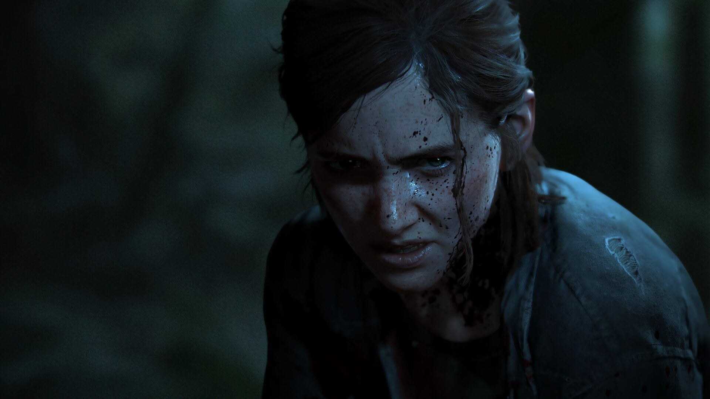

OVER 300 GAME OF THE YEAR AWARDS
THE LAST OF US
PART II

Five years after their perilous journey through
a pandemic-ravaged America, Ellie and Joel!
took refuge
in Jackson, Wyoming. Living in a thriving community of survivors
has allowed
them to experience peace and stability despite the
constant threat of the infected... When a
violent event disturbs
this peace, Ellie embarks on a quest for justice to finally turn page.
As
she hunts down one by one those responsible, she must face the physical
repercussions...
Bloaters are the fourth, rarest, and most dangerous stage of the
infected in The Last of Us and The Last of Us Part II. They take
years to develop and reach this stage after years of exposure to the
Cordyceps brain infection.
Bloaters are incredibly strong and physically imposing infected that
are covered in thick fungus that effectively acts as armor plates. As such,
their skin forms large patches of scale-like tissue that glow in
the dark, which form their mycotoxin pouches and engulf their
entire body. Because of this protective covering, they can
withstand multiple hits from weapons such as the shotgun and
hunting rifle, and even hatchets and machetes, making them
extremely tough to eliminate. Some bloaters are also impossible to
kill outside of cutscenes, like the one Joeland Ellie face in the
Wyoming hotel.
The main characters in The Last of Us are the protagonists and key figures driving the story
Joel – A hardened survivor who takes on the responsibility of' smuggling Ellie across a post-apocalyptic America.
Ellie – A brave and resourceful girl who is immune to the Cordyceps infection, making her the key to a possible cure.
Tommy – Joel’s younger brother, who has settled in a safe community and plays a crucial role in the story.
Tess – Joel’s partner in smuggling, known for her toughness and loyalty
The supporting characters in The Last of Us add depth and complexity to the world, influencing Joel and Ellie’s journey.
Bill – A paranoid but resourceful survivor who helps Joel and Ellie
Marlene – The leader of the Fireflies, dedicated to finding a cure for the infection.
Henry & Sam – Two brothers trying to survive in the outbreak.
David – A mysterious and dangerous leader of a group of survivors